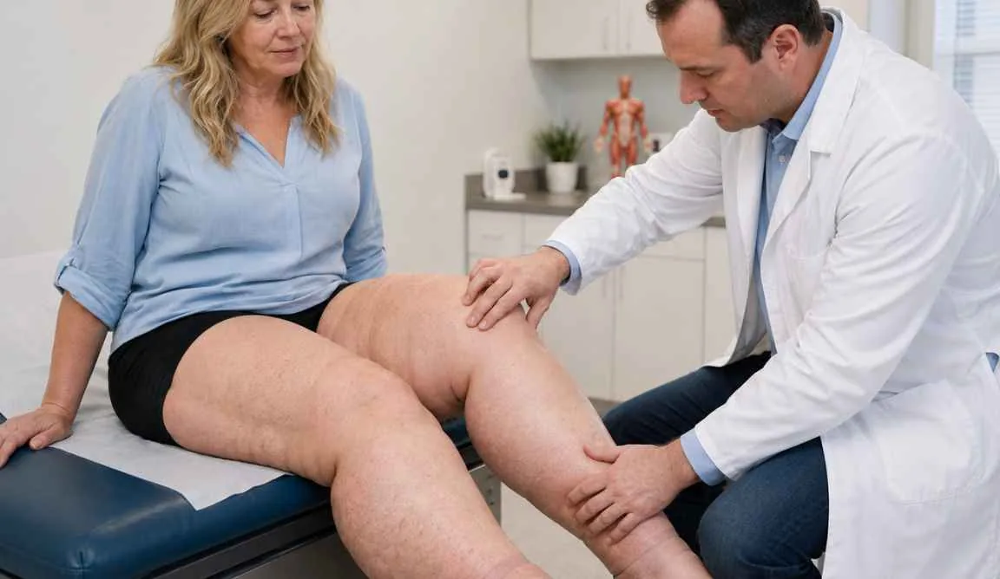
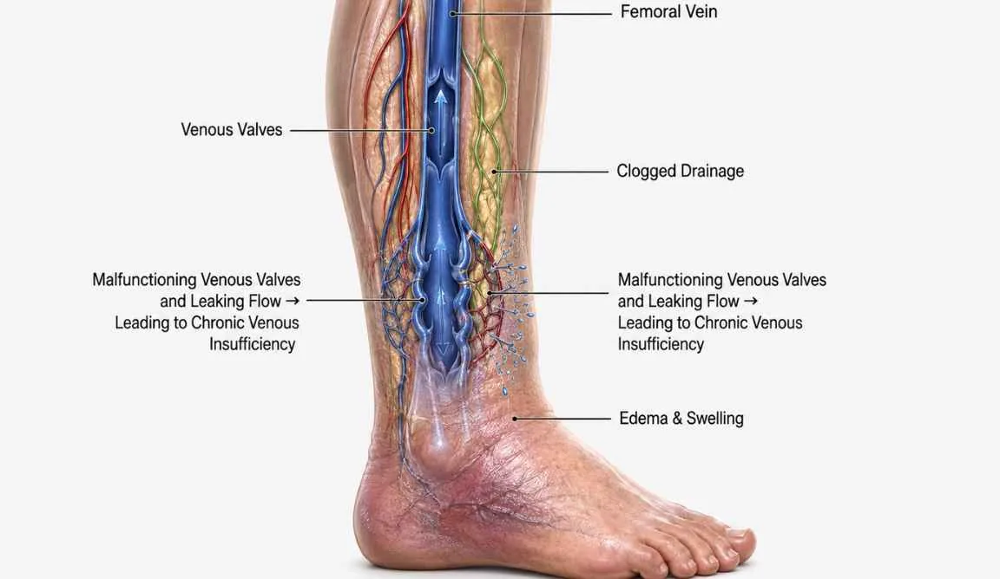
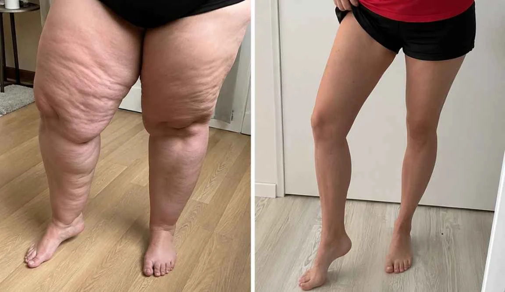
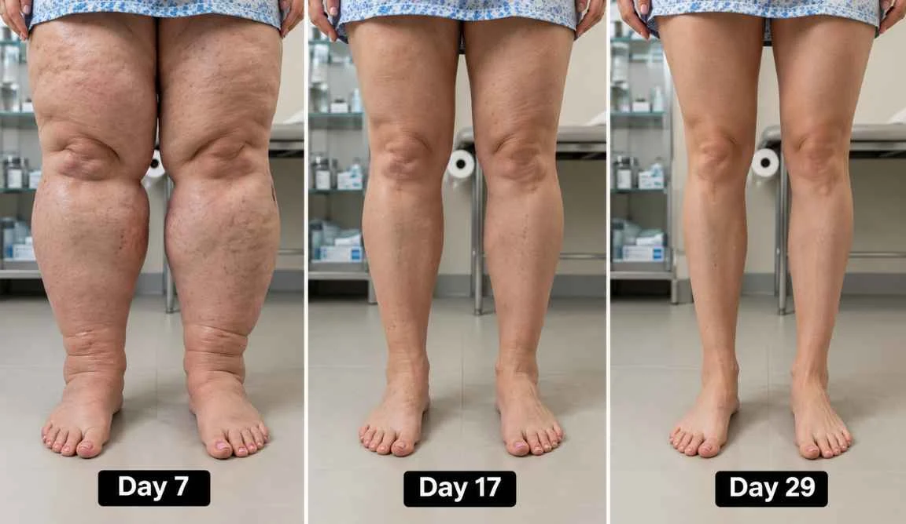
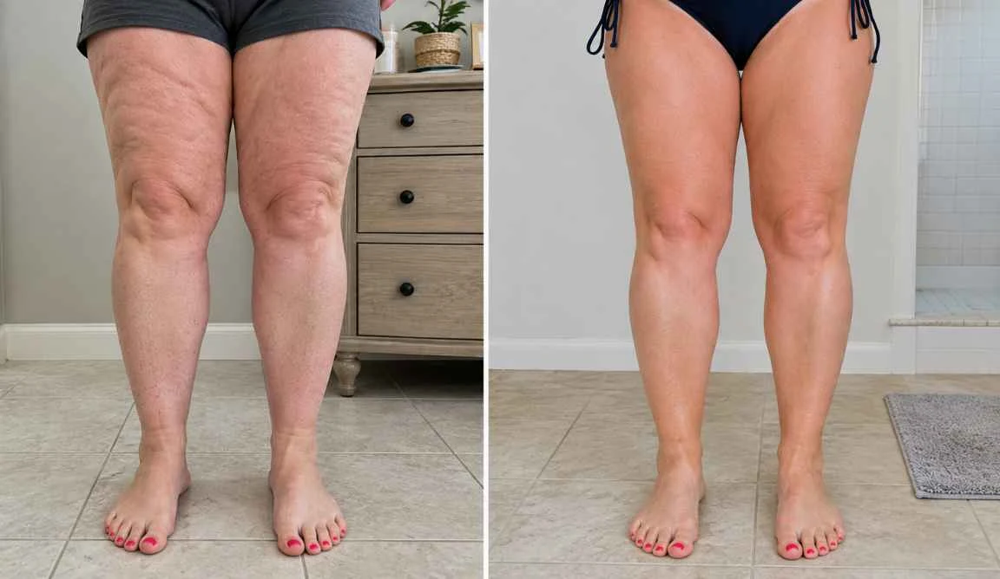
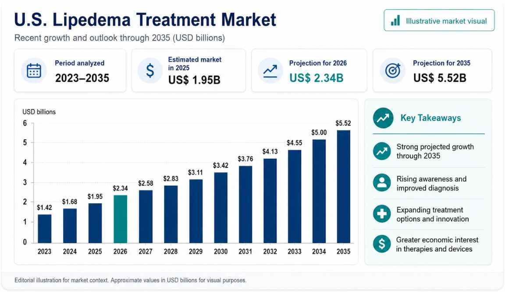
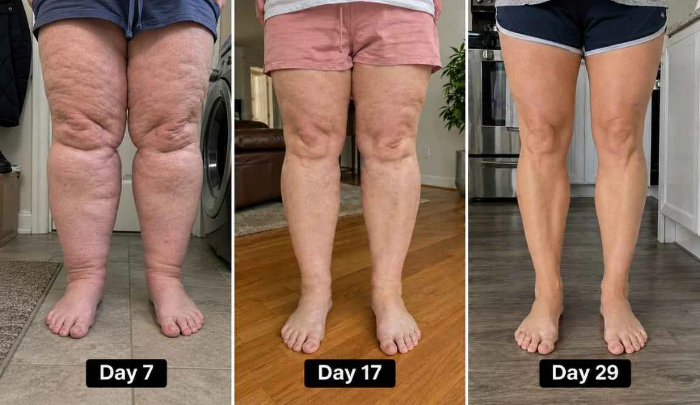
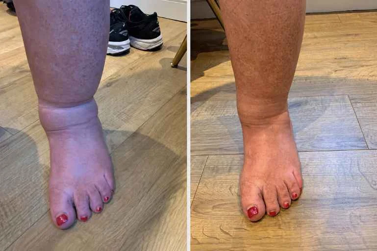
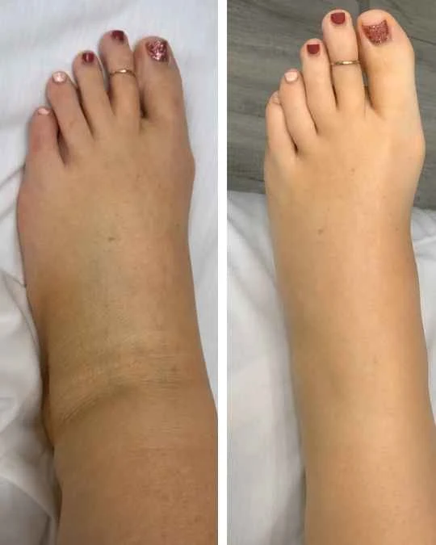
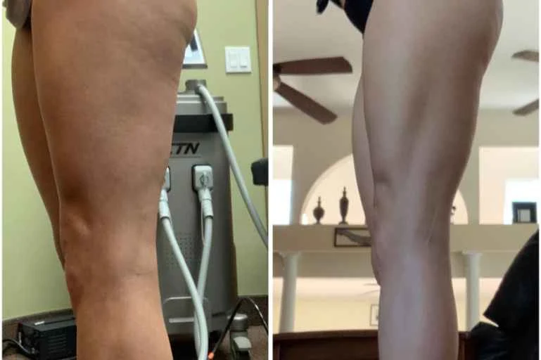

Georgia mom nearly dies on flight to daughter's wedding
(doctors say don't ignore this common sign in your legs)
She was five minutes from a blood clot. Airport paramedics rushed her off the plane on a stretcher. The warning sign? Her swollen legs.
In 12 years as a doctor, I thought I'd heard it all.
Until Jane sat down in my office on a Monday morning, with legs so swollen the fabric of her pants was pressing into her skin… and told me what happened on the flight to her daughter's wedding.
She couldn't even finish her first sentence.
Her voice cracked. Her eyes filled up. And what she said made my blood run cold:
"Doctor, I thought I was going to die on that plane. Right in front of my husband. Three hours before my daughter's wedding."
Jane told me her legs had been swelling for over three years and she'd followed everything her vascular specialists recommended: leg elevation, pills, diuretics, compression stockings, salt restriction. Nothing ever solved the problem.
She showed me a full panel of tests. All came back normal.
But it always ended the same way: after 30 minutes her ankles would blow up like balloons again.
Compression stockings that dug red grooves so deep into her calves it hurt to take them off.
Shoes that fit in the morning and didn't fit after lunch.
She carried a second pair in the car because she knew her feet would swell before she got home.
She'd stopped wearing her rings. Even her wedding band. After 3 PM her fingers swelled so much she had to pull it off in the bathroom so nobody would see.
She'd stopped saying yes to dinner invitations. Because sitting in a restaurant for two hours meant standing up with legs so stiff and heavy she walked to the car like she was 90. "I'm 58, doctor."
She stopped going to the pool with her grandkids. Stopped wearing dresses. Stopped taking full body photos. "I avoid the mirror in the morning. I don't want to see the puffy face. I don't want to see these legs. I don't recognize myself anymore."
And nobody ever took it seriously. Because everyone, her doctor, her friends, even her family, always said the same thing:
"Cut the salt and it'll get better."
"You need to lose weight."
"Drink more water."
"It's normal at your age."
"Menopause does that, honey. Just accept it."
Her own doctor looked at the tests, said everything was fine and told her to keep wearing compression stockings. "Your labs look great, Jane. It's just your age."
Three years hearing that. Three years believing it was her fault. That if she were more disciplined, ate less, exercised more… the legs would go down.
Until the day of the flight.
"I almost took the bus, doctor. I almost didn't go to my own daughter's wedding."
Before boarding she followed every single thing her vascular specialists recommended.

Put on her compression stockings. Drank water. Tried to move her feet. Took her medication and everything seemed fine.
But it wasn't enough.
"Two hours into the flight, doctor. Just two hours."
She felt a sharp stab behind her left knee. Then a tightness in her chest.
Like someone had sat on her ribs. Her heart started pounding so hard she could hear it over the engines.
"I grabbed my husband's arm and whispered: 'Something's wrong. I can't breathe.' He looked at my face and went white."
Right away, a flight attendant came running with an oxygen mask and they radioed ahead for a paramedic team to be ready at the gate.
Jane spent the last 47 minutes of that flight with the oxygen mask on her face, squeezing her husband's hand, convinced she would never see her daughter walk down the aisle.
When the plane landed, she was taken out on a stretcher.

The paramedics at the gate checked her vitals, looked at her swollen legs, and said:
"Ma'am, swollen ankles or even swollen feet mean the veins are damaged. And damaged veins form blood clots.
These clots travel from the legs to the lungs, where they can block a critical artery. It happens in seconds."
THE NIGHT EVERYTHING CHANGED
Jane refused to go to the ER. She went back to the hotel, got herself ready, and went to her daughter's wedding.
But she wasn't there. Not really.
She sat at the table farthest from the dance floor. Pulled the tablecloth over her legs. She refused to be part of the most important moments of her own daughter's wedding. Dodged almost every photo. In the album, the mother of the bride shows up in three pictures. All from the chest up.
"Doctor, I don't recognize my own legs anymore. And on the most important day of my daughter's life, I hid. I disappeared."
I sat in silence for a while. Because I'm a mother too.
And something inside me shifted. It wasn't just about Jane. It was about every woman who sits in that chair, shows me swollen legs, and hears the same empty line: "Your labs are normal. Wear compression stockings."
I wasn't going to accept that anymore.
THE DISCOVERY THAT CHANGED EVERYTHING
For the next three months, I became a different person.
I couldn't sleep without thinking about Jane's legs. And every woman I was seeing daily with the same problem.
I devoured every research paper on chronic venous insufficiency and lower limb edema I could find. Called vascular researchers at Johns Hopkins, Cleveland Clinic and the Mayo Clinic. Attended medical conferences in Europe. Spent my own money on journals, clinical reports and access to restricted research databases.
Because every time I thought about stopping, I saw Jane's face in my office.
She always wrote the same thing on her follow up forms:
"I DON'T RECOGNIZE MY OWN LEGS ANYMORE."
Not "the swelling is bad." Not "I'm uncomfortable."
"I DON'T RECOGNIZE MY OWN LEGS ANYMORE."
And what I found in that research… made me question everything I learned in medical school.
Every treatment we prescribe is wrong.
Not wrong as in dangerous. Wrong as in INCOMPLETE.
Compression stockings, elevation, diuretics, salt restriction. None of it fixes leg swelling. They manage it. Temporarily. Like bailing water out of a boat with a bucket while there's a hole in the hull.
THE HIDDEN CAUSE OF SWOLLEN LEGS

I found the answer in a Harvard study that should have changed medicine. But most doctors have never read it.
Doctors examined the veins of women with swollen legs under a powerful microscope. When they zoomed in, they saw something disturbing.
The veins had tiny holes.
The fluid from the blood was leaking out and pooling inside the legs, ankles and feet.
Like a leaky pipe flooding the floor of your house.
Harvard doctors gave it a name. They called it "leaky veins."
Harvard, Johns Hopkins and the Mayo Clinic all confirm: leaky veins are the root cause of swollen legs.
When I read that, I almost called Jane right then and there. Because it finally made sense. The perfect labs. The treatments that never worked. The three years of guilt.
It wasn't her fault. It never was.
Her veins were leaking from the inside. And nobody, not a single specialist she saw, ever looked for that.
And here's the number that should scare you:
The U.S. National Library of Medicine says the human body can hide up to 3 liters of trapped fluid before the swelling is even visible.

Which means by the time you notice it, heavy legs, sock marks, tight shoes, your legs have already been flooded from the inside for weeks.
WHY THE VEINS BEGIN TO LEAK
For most women over 45, it's not ONE thing. It's several. Working against you at the same time. For years.
Menopause and hormones
Estrogen keeps your vein walls firm. When it drops, the walls weaken, stretch and open tiny holes where fluid escapes. It's not "normal aging." It's a structural deficiency nobody explained to you.
Extra weight
Every extra pound is direct pressure on your leg veins. The walls give way. Holes open. Fluid escapes. 25 to 50% of women with lipedema have venous disease as well. The two conditions feed off each other. Leaking veins worsen lipedema. Lipedema puts more pressure on the veins. A cycle that gets worse every year.
Blood pressure medication
The medication your doctor prescribed. Amlodipine (Norvasc), the most prescribed blood pressure drug in the U.S., causes leg swelling in up to 30% of women. And women are 2 to 3 times more likely to get that side effect than men. Your doctor prescribed it to lower your pressure. And created a new problem in your legs. The diuretics that were supposed to "fix it." Furosemide (Lasix). Hydrochlorothiazide, they force your kidneys to flush water but they don't seal a single hole. And they drain potassium, magnesium and the minerals your veins need to stay strong. The medication that was supposed to help is eroding your veins from the inside.
Age
Your veins are under pressure every day, for decades. Eventually the walls thin, tiny holes open, and fluid begins to leak out into your legs.
That’s why the usual advice never works. Elevate your feet, wear compression socks, cut salt, it just moves the fluid around for a few hours, while the veins keep leaking all day. So by evening, the swelling is back.
THIS IS WHY NOTHING YOU'VE TRIED HAS WORKED
"Cut the salt." You did. Still swelling.
"Lose weight." You did. Legs stayed the same.
"Wear compression stockings." Squeezed, hurt, left grooves. The second you took them off, it all came back.
"Elevate your legs." Worked for 20 minutes. Stood up and it all came back.
Because NONE of these treatments fix the hole. They just move fluid around for a few hours. But the veins keep leaking. All day. All night. Nonstop.
As long as the holes stay open, the swelling ALWAYS comes back.
I explained this to Jane and she cried. Not from sadness. From anger.
"Three years, doctor. Three years being told it was my fault. And it was a hole in my vein."
Signs your veins are leaking
Legs & ankles
- Ankles swell by evening
- Heavy legs by evening
- Deep sock marks
- Shoes tight by noon
Face & hands
- Puffy face every morning
- Swollen eyelids
- Rings won't fit
If you checked three or more, your veins are already leaking. And every day without sealing those holes, the problem gets worse.
THE VITAMIN THAT SEALS THE HOLES
I needed to find something that did what no conventional treatment could: seal the holes from the inside.
Your body needs vitamins to work. Your heart needs potassium to beat. Your brain needs vitamin B to think. Your skin needs vitamin C to stay firm.
Your veins need a vitamin too.
It's called Vitamin P.

Discovered by Dr. Albert Szent-Györgyi, winner of the Nobel Prize in 1937. He named it "P" for permeability because it does one thing that no stocking, no diuretic and no elevation can do:
Seals the holes from the inside. And rebuilds the vein wall so they don't open again.
When I read the studies on Vitamin P, I called Jane that same day.
"I think I found it, Jane. Come to the office tomorrow."
In clinical studies, women taking French pine bark extract report no more heavy legs and no more tight shoes in the first three weeks.
After six weeks, 92% of women say the swelling and pain while walking are gone. They just stop noticing their legs.
How vitamin P stops the swelling
Your vein walls are held together by collagen. As you age, it weakens. Holes open. Fluid leaks.
Vitamin P works directly on that collagen. Strengthens it. Pulls the walls back into place. The holes close.
Compression stockings squeeze from the outside. Vitamin P repairs from the inside. The difference between a band aid and surgery.
There are enzymes in your body that slowly eat away at collagen. Vitamin P blocks those enzymes. No enzymes attacking, no new holes. No new leaks.
No diuretic does this. Lasix flushes water today and tomorrow your veins open two new holes. You're mopping the floor while the pipe is still broken.
THE MOST POTENT SOURCE OF VITAMIN P IN THE WORLD

When the Nobel Prize was awarded, Vitamin P was too rare for clinical use.
Decades later, scientists found the most concentrated source on earth: a deep red extract from the bark of French pine trees.
Jane was my first patient to try it.
Three weeks later, she walked into my office differently. Lighter. Faster. Before I could ask anything, she pulled up her pant leg:
"Look, doctor. Look at my ankles."
I could see the bones of her ankle. For the first time in three years.
"My shoes fit again. I put my wedding ring on yesterday and didn't have to take it off. I slept through the night without a pillow under my legs. Doctor, I thought I'd never get these legs back."
Jane wasn't the only one.
HARVARD SCIENTISTS TESTED VITAMIN P WITH 38,000 WOMEN
In a clinical trial, women with swelling in their legs, ankles and feet took Vitamin P from French pine bark extract for 8 weeks.
Here’s what changed:

- Day 7The body starts to drain.
Women reported 2 or 3 extra bathroom trips in the first days. That’s a sign excess water is finally leaving the body.
- Day 15Feet and ankles come back.
Sock marks disappeared. Tight shoes slipped on easily. The evening leg heaviness was fading.
- Day 21Face and belly look slimmer.
With less fluid pooling, faces looked visibly slimmer. Waistlines reduced by 1 to 2 inches. On average, women lost 4 to 6 pounds.
- Day 26No more heavy legs at night.
After four weeks, women reported no more heaviness in their legs. They slept all night without discomfort. Walking was normal again.
- Day 29The swelling is gone.
Participants’ legs, ankles and feet were normal again. There was no signal of swelling or tight skin. No pain was reported after day 30.

Notice the pattern. The first change takes a full week.
The next takes 8 days. Then 6. Then 5. Then 3.
Once Vitamin P starts sealing the holes, the results compound. Each day your veins leak less, the body catches up faster.
That's why most women say the biggest visible change happens between week 3 and week 4.
"By day 4 I was already noticing a difference. By week 2 my ankles were back. I stood in front of the mirror in a dress for the first time in three years and just stared. I'm grateful I got to be part of this study. And I'm glad other women won't have to wait as long as I did."
"I'm on Metformin, lisinopril and Lasix. I was terrified of adding anything else. But Vitamin P didn't interfere with a single one of my medications. Didn't change my diet. Didn't change my routine. By week 3 my husband looked at my legs and said 'what happened to the swelling?' Four words. And I broke down crying."
"I almost said no to the study. Almost talked myself out of it like I'd done with everything else for two years. Thank God I didn't. My legs went down. My shoes fit. I sleep through the night. Two years of hiding for no reason."
BEYOND SLIMMER LEGS
When the swelling drains, the relief doesn't stop at the legs.
More energy all day. That 3 PM crash disappears.
Brain fog lifts. Words come back. Focus comes back.
Visibly flatter belly. Without trapped fluid, the waist shrinks and clothes fit the way they used to.
- You stop hiding in summer.Shorts. Dresses. Sandals. You stopped wearing them years ago. Not because you don't like them. Because you were ashamed. That ends.
- You feel like a woman again.Not a patient. Not a condition. Not the one who sits while everyone stands. You look down and recognize your own body for the first time in years.
- You stop avoiding your own reflection.Morning mirror. Fitting room. Bathroom after a shower. You've been avoiding all of them. When the puffiness drains from your face and legs, you stop looking away.
- You let people get close again.You know what you stopped doing. Sitting close on the couch. Letting your legs show in bed. Wearing something that makes you feel attractive. Nobody talks about this part. But you know.
- You stop being the reason plans get canceled.Dinner invitations. Weekend trips. Grandkids at the pool. You've said no so many times people stopped asking. That changes.
- Your body stops fighting you every morning.Stiff knees. Swollen fingers. Brain fog so thick you lose words mid sentence. That's not aging. That's fluid pressure. When it drains, you wake up feeling like you slept for the first time in years.
WHY DIDN'T THIS SOLUTION COME SOONER
The studies on Vitamin P have existed for decades. The Harvard research isn't new. The data is published in journals any doctor can access.
So why didn't anyone tell you?
Because the math doesn't work for them.

A woman who buys Lasix every month, replaces compression stockings every 3 months, makes regular vascular appointments and eventually needs a $7,000 procedure, that woman generates revenue. Year after year.
A woman who takes Vitamin P for 29 days and gets better? That woman never comes back.
It's not a conspiracy. It's a business model.
The pharmaceutical industry doesn't profit from permanent solutions.
It profits from ongoing treatment. No billion dollar company is going to promote a vitamin that makes their products obsolete.
WHAT HAPPENS WHEN YOU THREATEN A $70 BILLION INDUSTRY
First came the friendly warnings from colleagues. "Katherine, be careful. People are talking."
Then the referrals stopped. A vascular specialist I'd worked with for years went quiet. No calls. No explanation.
I tried to get the formula produced. Eleven labs said no. Not profitable enough. One told me straight: "We can't produce something that competes with the clients who pay our bills."
Then I found a small independent lab run by two biomedical engineers who believed in what we were doing.
We developed the formula. A few drops under the tongue, twice a day. Vitamin P at clinical concentration, absorbed directly. No pills. No prescriptions. No clinic visits.
That's when two law firms reached out on behalf of "concerned industry professionals" suggesting I "cease distribution immediately."
My response? We produced more.
But this lab is small. They produce in limited batches. And the legal processes haven't been formalized yet. One injunction, one regulatory filing, and production stops.
If this page is still live and the button below still works, units are available. I can't promise they will be tomorrow.
WHERE TO GET VITAMIN P TODAY
Most "circulation" supplements on the market don't contain real Vitamin P. Or they have it in doses so low it makes no difference. I tested seven brands before I found one that used the real clinical concentration.
Linfaflow is the only U.S. brand offering the original Vitamin P formula, from French pine bark extract, at the same concentration used in clinical studies. Made right here in the United States, in a high purity botanical lab. Every batch tested in an FDA registered facility.
To keep it affordable and make sure you get the real formula, Linfaflow is not sold on Amazon, Walmart or in drugstores. Only available through the official website.
- Each bottle lasts 30 days or more
- Natural formula, safe for daily use
- Won't interfere with other medications
- Doctor formulated and endorsed
- Made and shipped from USA
- FDA registered facility · GMP certified
- 90 day money back guarantee
THE RESULTS?
- Over 90% report significant reduction in swelling within the first week
- Most reduced or completely eliminated their diuretic medications
- Many canceled the vein procedures their doctor had recommended
- But my favorite stat? Our refund rate is 0.4%. That's FOUR people per thousand.
- Medical-grade compression stockings: $80-150 per pair (replaced every 3-6 months)
- Monthly doctor visits: $150-300
- Diuretic prescriptions (monthly): $30-150
- Annual total: $3,000-$5,400
(Plus the indignity of wrestling stockings over swollen legs every single morning.)
- Initial vein mapping and consultation: $500
- Duplex ultrasound: $500-1,000
- Vein ablation or sclerotherapy: $3,000-$10,000 per leg
- Total: $4,000-$11,500
(For a procedure that doesn't even address the inflammatory capillary leaking driving your edema. And many insurers deny coverage, calling it "cosmetic.")
- Venous ulcer treatment: $15,000-$30,000+ per episode
- Weekly wound care visits for months
- Specialized dressings and antibiotics
- Total: Your savings... your mobility... your dignity.
The medical industry LOVES that progression.
You know why? Because every stage costs more than the last. Swollen legs lead to skin changes. Skin changes lead to ulcers. Ulcers lead to wound care centers. And wound care is a $70 billion industry that only exists because nobody bothered to fix the swelling early.
It's a goldmine built on human suffering.
But here's what really pisses them off...
Linfaflow should cost $3,000 per Bottle. That's what similar medical-grade topical formulations sell for in specialty vein clinics. Hell, that's what the prototype cost me to develop.

But I didn't create this to get rich. I created it because I read Ruth's desperate survey response. Because Sharon was hiding her legs under oversized scrubs. Because Frank's wife was pulling his shoes off every night.
So here's the deal: The regular price is absolutely less than $100. Already 95% less than ONE MONTH of typical treatment.
But that's not what you'll pay today.
THE ONLY U.S
Linfaflow
GMP-certified
The guarantee
Look, I get it. You've been burned before. Spent money on "miracle cures" that turned out to be expensive garbage.
So here's my promise:
Try Linfaflow for 90 days. Use it every single day. Twice a day if you want. Feel the heaviness lift. Feel the swelling shrink. Feel your confidence come back.
And if you don't look down at your legs one evening and think... "Holy crap, I can see my ankles again"...
I'll refund every penny.
No forms to fill out. No "store credit" nonsense. No questions asked. Simply email and you will be refunded within 24 hours.
Why am I so confident? Because our refund rate is 0.4%. That's FOUR people per thousand.
Linfaflow works. Period.
And no, this isn't the type of guarantee every other company throws around nowadays. This is no gimmick.
Want proof? Try emailing or calling our customer service. You can literally reach us 24/7. We respond to every single email within minutes. We answer every single phone call. It may sound old-fashioned but our customers are our absolute #1 priority. Period.
How to get 70% off today
To introduce Linfaflow to more women, they’re offering readers an exclusive 70% off. The offer closes .
In their words
What women who use Linfaflow told us
We spoke with several longtime Linfaflow users to hear, in their own words, how it has gone for them. Their experiences varied, but the same themes came up again and again. Here is what three of them shared.
“I’m on my feet all day behind the chair. By closing time my ankles were so swollen my socks left deep rings. Within the first week, I already felt the tightness starting to ease. By week three I could see my ankle bones again. I actually stopped and stared in the mirror. My shoes slide right on in the morning now. I keep telling the girls at the salon about it.”

“I’ll be honest, at first I wasn’t sure I’d feel much. But by the end of the first week my legs already felt lighter at night. Then around week four I stopped propping them up on two pillows just to sleep. I don’t even think about it anymore. If you’re the type to give up early, don’t. Stick with it. I’m so glad I did.”

“My daughter got married in June, and I’d been dreading it for months. I pictured myself sitting the whole time while everyone else danced. I’d been taking the drops since early spring. I stood through the entire ceremony. I danced at the reception. And I woke up the next morning with legs that felt like my own again. I cried a little, honestly. That day meant everything to me.”

Comments
8How long does delivery usually take? I really need these, my ankles are so swollen again 😩
Hi Sarah! I'm near Chicago and mine arrived in 3 business days. Super fast!
I bought mine last week at full price and now it's 50% off, kind of annoying 😅 But honestly still worth every penny. After two weeks my legs finally don't feel like lead weights anymore!
Does this work if you sit at a desk all day? My ankles are always so swollen by evening 😩
Lena yes!! I'm in sales, on my feet 8 hours a day. Since I started Linfaflow my shoes fit perfectly again at night. Can't believe I waited so long honestly

Started three weeks ago and my husband actually asked me "what are you doing differently? Your legs look so much better." Made me so happy 😊

How quickly does the water drainage actually kick in?
Charlotte for me it only took 3 days! I had to go to the bathroom more often but the stiffness in my calves disappeared almost right away. Honestly shocked
